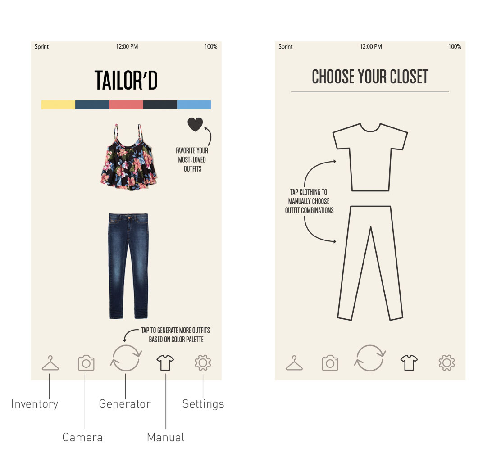

TAILOR'D focuses on making the most important choice of the day an easy decision: choosing an outfit to wear! With an auto-generating closet based on complementary color palettes, and an easy way to view your closet virtually, you'll never spend too long trying on outfits in the morning again.
Christina Ou: Software Engineer
Kristin Yin: Software Engineer
Selena Zhen: Designer
Tiffany Zhu: Software Engineer
Generate outfits based on complementary color palettes or manually mix and match clothes from your inventory
View your closet and favorited outfits on the go!
Ionic: Mo bile framework that uses HTML, CSS, and JavaScript
Flask: Create HTTP calls for server
We had some problems getting started with the Ionic interface, since only one member had experience with front end work. We also had some problems with Flask and connecting our application to Heroku so that we could all connect to the server and run the application.
Although color isn't the only thing to picking a nice outfit, by just wearing colors that look nice together your outfit can gain a huge boost. Many people have trouble picking out outfits, because they are not good with colors. Particularly, we have a friend who is color blind and often needs to double check his outfits with a friend before starting his day. We hope TAILOR'D would be an app that could help people like our friend who either have a disability in identifying colors or just needs an extra hand in find colors that look good together.
We are proud of how we were able to finish the application and get it all working. We were able to code almost all of the features we had imagined having, so that was awesome. This was our first hackathon, and we were so excited to find out that we even won one of the awards: Best Mobile App.